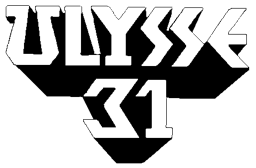

Ulysses 31 poster © 1981 DIC Audiovisuel / TMS. Used for classroom teaching.
Greek myth in space, made in France and Japan. Ulysses kills a Cyclops to rescue his son Telemachus, so Zeus condemns him to wander the universe in his starship, the Odyssey, until he finds the Kingdom of Hades.
He spent 26 episodes trying to find his way home. Your images shouldn't have to: this page lives in the shows folder, so every path to an image starts with ../ to go up one folder first.
In France the show aired as Ulysse 31. On a page about that release, the same poster needs different alt text, because what matters now is the poster itself:
Ulysses 31 poster © 1981 DIC Audiovisuel / TMS. Used for classroom teaching.
The French logo is public domain: it is only lettering and simple shapes, too simple to be copyrighted.

Ulysse 31 logo by Eunostos, via Wikimedia Commons. Public domain.